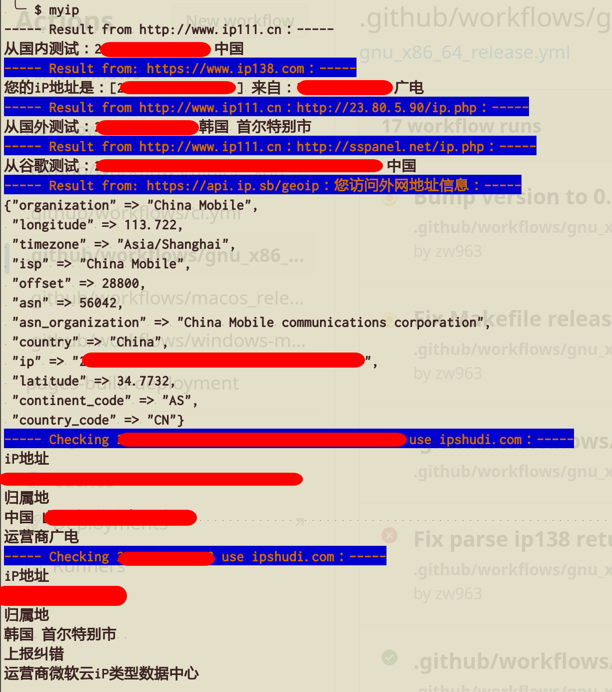

myip
返回本机的公网 IP 以及访问外网的公网 IP，匿名使用以下服务:
http://www.ip111.cn/ 获取 IP 信息. https://www.ipshudi.com 针对 ip111.cn 获取的 IP 信息,查询更加详细的信息.
此外,也额外访问以下网址获取信息作为补充
http://www.ip138.com 获取国内 IP 信息 https://api.ip.sb/geoip 获取外网的详细 IP 信息

Contributing
- Fork it (https://github.com/crystal-china/myip/fork)
- Create your feature branch (
git checkout -b my-new-feature) - Commit your changes (
git commit -am 'Add some feature') - Push to the branch (
git push origin my-new-feature) - Create a new Pull Request
Contributors
- Billy.Zheng - creator and maintainer